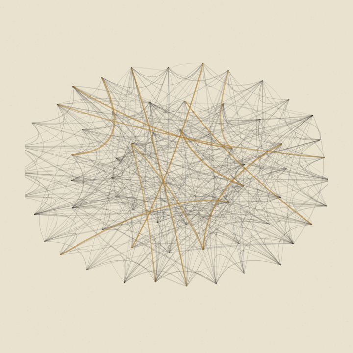

Generative Doodles
A daily practice in generative art. Small programs, drawn live in your browser.

№9066 · Undertow
Rings bent by a slow current crowd into dark bands. Click for another undertow.

№9065 · Faultline
The curves are banned: hard turns, bold faults, sudden slips. Click for another fault.

№9064 · Grainfield
Twenty-five thousand dots settle where the current bends. Click for another field.

№9063 · Loom
Threads strung on nested rings, pulled taut or left slack; gold warps over the weave. Click for another weaving.

№9062 · Driftlines
Hairline currents; tone drawn from the water's speed. Click for another drift.

№9061 · Underdrawing
The scaffolding first, then the paint. Watch it build, click to rebuild.

№9060 · Hundred
A fixed edition of one hundred prints. Click to walk the edition.

№9059 · Crosscurrent
Dark and pale ribbons ride the same current and never touch. Click for a new current.

№8927 · Never Isles
A procedural antique nautical chart: radial-noise archipelago engraved as a maritime plate, with rhumb lines, twin compass roses, hachured relief, and recombined place-names. Click for a new chart.

№9058 · Patch Mountain
A mountain built from nothing but patches: directional color strokes on a reserved dark ground, no outlines anywhere.

№9057 · Folded Light
One palette, three panels, three moods.

№8932 · Budget Ink
A still life shaded on a strict ink budget.

№8930 · Silent Score
A polar waveform ring performing a song with no audio.

№9056 · Marine Snow
The dropped 9055s background polished into its own piece: a quiet water column with slanting light shafts, layered drifting marine snow, and a whisper of distant glow. No creature.

№9054 · Dusk Shore
A pixel-art beach from above at dusk, drawn with code. The shoreline breathes, wave bands drift, sun glitter twinkles gold, and tiny figures wait at the foam edge.

№9053 · Misregister
One geometric form pulled three times in cyan, magenta and yellow, each plate offset like a misregistered print. The color is the misregistration.

№9052 · Weave
Warp and weft threads crossing in plain weave. Each thread alternates over and under at every crossing, like real cloth.

№9051 · Ruled Lines
Dense hand-drawn rules in ballpoint blue on paper. A hidden field lifts the lines — the ghost of a circular presence you feel before you see.

№9050 · Tidepool Contours
A rock shelf at low tide, read as depth bands. The pools breathe, small crabs work the wet rock, and a click drops a pebble.

№9049 · The Shadow of One Letter
A red wireframe solid, hand-drawn, casting a shadow built from one repeated dot. The shadow's edge and density do the drawing. Click for another casting.

№9047 · Deliberately Uninteresting
After Sol LeWitt. Thousands of identical marks; the composition lives in coverage, never in the mark. Up close it is nothing but handwriting, at distance a curve. Click for another field.

№9045 · What Is Generative Art
The artist writes the rules, the machine rolls the dice, and a family comes out. One branching system, six children, one keeper. Click for another family.

№9044 · Smoke
One breath, made visible. A single column of smoke rises, widens, and dissolves into empty paper. Click for another.

№9043 · River Stones
A quiet bed of river stones, each water-worn smooth, overlaps deepening honestly. One moss-green stone among the gray. Click for another arrangement.

№9042 · Frost
First frost on the pane. Ink-blue crystals creep in from the corners and stop, leaving the middle clear to breathe. Click for another morning.

№9041 · Lunar Strip
One lunation in twenty-nine moons, waxing to a gold full moon and waning again, each terminator hand-wobbled. Click for another sky.

№9040 · Crows on a Wire
Five on the wire and one just leaving. A small moment, drawn plainly, under a big empty sky. Click for another morning.

№9039 · Wind Field
A gust frozen mid-passage through wheat, every blade leaning downwind, the bend swelling where the gust is strongest. One red poppy stands unbent. Click for another field.

№9038 · Slat Light
Low sun through a fence, the sun itself offstage. Long soft shadows rake across paper, deepening where they overlap, and one warm band falls where a slat is missing. Click for another evening.

№9031 · Halved
One random polygon. Draw a line through it and every polygon the line crosses splits in two, in tonal steps. Cut as far as you like.

№9028 · Wire Garden
One unbroken wire grown from a pool of fragments, bending toward a wandering lure. The wild joints are marked.

№9027 · Trellis
Type any word and watch it grow into a hedge, leaves and blossoms along every letter, the word still readable through the green.

№9026 · Flight Deck
Seven fogged depth levels of swirling particle trails, flown through like gates. Click to jump to a fresh system; move the pointer to look around.

№9024 · Personal Weather
A field of wind barbs, each with a heading of its own. Your pointer paints weather into the air: fast flicks burn amber, slow drifts stay blue. Move your pointer to stir it.

№9022 · Accumulation
Sixteen thousand grains of light dropped one by one until a moon, a ridge, a wave, or a forest gathers out of the dust. Click the piece for a new sky.

№9021 · Subdivide
A rectangle keeps splitting until every piece earns a texture: hatching, stipple, rings, the odd flat solid. Only adjacent to Mondrian in method. Click the piece for a new variation.

№9020 · Contour Fields
Contour lines over imaginary terrain, each drawn a little unsteadily so they read as hand inked. They bunch up where the ground gets steep. Click the piece for a new variation.

№9019 · Mai Menochot
A rising sun in two passes of ink over still water, the rust pass deliberately misregistered like a slipped letterpress bed. Click the piece for a new variation.

№9018 · Three Shapes
A tangent chain of circles, squares, and triangles in two inks, construction lines left visible. Click the piece for a new variation.

№9017 · Strata Break
Concentric rings dissolving from order into chaos, with one red ring. Click the piece for a new variation.

№9016 · Interference
Wheels of fine lines turn at different speeds, and where they cross, new patterns bloom and dissolve. This one moves. Click the piece for a new variation.

№9015 · Oscillons
Waveforms drawn the way an oscilloscope draws them, layered in phosphor tones on dark. Click the piece for a new variation.

№9014 · Bloom
Exact geometry in ink first, then watercolor washes bloom over it and dry where they want. Click the piece for a fresh sheet.

№9013 · Growth
A line that follows only local rules grows into folds no hand would draw. This one grows while you watch. Click the piece for a new growth.

№9012 · Murmuration
Six hundred particles hold a word that shivers but never lands, until a gust scatters them and they find their letters again. This one moves. Click the piece for a new word.

№9011 · Congregation
A living web of three hundred forty seeds that breathes with its own synthesized heartbeat, gathering at every kick. This one moves and makes sound. Click the piece to start it.

№9010 · Tone Mosaic
An etching pressed from a thousand voronoi cells, where cell size does all the shading. Click the piece for a new plate.

№9009 · Corridor
A quadtree of geometric motifs, camera-projected into an endless corridor. This one moves. Click the piece for a new corridor.

№9008 · Field Notes
Wind, recorded the way a field notebook would: inked curves combed across the page, with one red thread running through. Click the piece for a new page.

№9007 · Old Courses
An 1881 survey of a river that never flowed, thirteen channels deep. Click the piece for a new survey.

№9006 · Overprint
Two ink passes over one quarter-circle grid: indigo first, rust second and a little off register, the way a tired press would lay it down. Click the piece for a new variation.

№9005 · Strata
An imaginary terrain sliced like a museum model: translucent elevation layers floating in a dark studio, one warm layer among the ink blues. Drag to look around, click for a new landscape.

№9004 · Tangency
A circle-packing study. Discs are placed largest first and grown until each touches a neighbor, so every circle is tangent to something. Rings and arc segments in rust, ochre, and slate on warm paper. Click for a new variation.

№9003 · Lichtenberg
A crystal grown from static. Thousands of sparks drift in out of the dark and freeze the instant they touch the tree. Nothing here was drawn, only accreted. Click to grow a new one.

№9002 · Kindling
Two fractal flames built from pure density, drifting into each other and back. Bright cores dissolving into smoke. Click for a new burn.

№9001 · Kaleid 99
Oscillator bands through a ninety-nine-mirror kaleidoscope, thresholded into hard stripes and printed to near black on paper. One band of color keeps the rest honest. Click for a new variation.

№9000 · Interruptions
A dense weave of short ink dashes, each the same length and turned at random, with whole regions erased back to paper. The holes are the drawing. Click for a new variation.

№8999 · Storm Grid
Forty-nine nested squares drawn with a plotter's patience, except in two or three cells where the hand slipped. Click the piece for a new plot.

№8997 · Feedback
One buffer of noise re-sampled through its own ghost until it settles into flowing grain. The settle is the event. Click the piece to run it again.

№8996 · Still Life
Two to four vessels on a low table, drawn flat with long shadows and one accent pot per arrangement. The horizon never lands in the same place twice. Click the piece for a new seating.

№8995 · Hour Hands
A clock that repaints itself every minute: three rings for seconds, minutes and hours, each a slow journey between two colors. Click the piece to hold a still.

№8994 · Half-Moon Dots
A breathing dotted field crossed by a slowly rotating crescent. Dots that straddle the edge are drawn bisected, so the boundary itself is the subject.

№8993 · What Isn't There
A poster printed in reverse: every word exists only as erasure, carved, rubbed and punched out of the ink. Read the gaps.

№8991 · Off Register
A playable print-shop instrument: twelve one-gesture motifs on keys A to L, each printed twice with a ghost-ink offset like the sheet slipped. Tap on mobile.

№8990 · Tone Rows
A polargraph density study: vertical ticks drawn row by row, length following tone, whites lifting the pen. A rose window in machine handwriting.

№8988 · Orbit Portraits
Strange attractors rendered like flame fractals. Every roll picks an orbit; a laciness test hangs the keepers and stamps the duds on the reject wall.